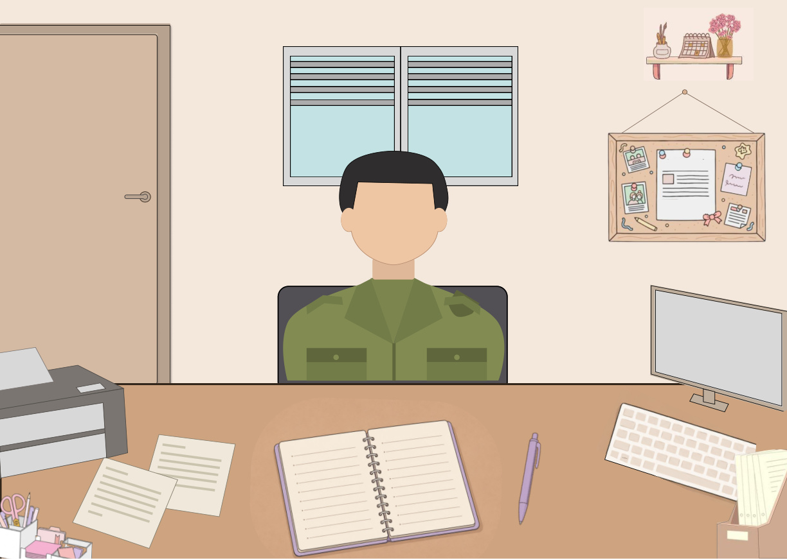

<!doctype html><html lang="he" dir="rtl"><head><meta charset="utf-8"><meta name="viewport" content="width=device-width,initial-scale=1"><title>לומדת ביקור בית — מצב לא מקוון</title><style>
:root{font-family:Arial,"Noto Sans Hebrew",sans-serif;color:#423b37;background:#f5e9df;font-synthesis:none;text-rendering:optimizeLegibility}*{box-sizing:border-box}body{margin:0;min-width:320px;min-height:100vh;background:radial-gradient(circle at 15% 12%,#fff8f0 0,transparent 28%),#f5e9df}.app-shell{max-width:1220px;margin:0 auto;padding:24px 34px 18px;min-height:100vh;display:flex;flex-direction:column}.topbar{display:flex;align-items:center;gap:14px;padding:0 0 22px;border-bottom:1px solid #ddcfc5}.brand-mark{height:48px;width:48px;border-radius:15px;background:#796b92;color:#fff;display:grid;place-items:center;font-weight:800;font-size:17px;box-shadow:0 6px 14px #796b9228}.eyebrow{font-size:12px;letter-spacing:.06em;color:#8b7e91;font-weight:700}.topbar h1{font-size:24px;margin:2px 0 0}.top-meta{margin-right:auto;color:#897d75;font-size:13px}.layout-card{margin:auto 0;background:#fffaf6;border:1px solid #e8d9ce;border-radius:24px;box-shadow:0 18px 50px #6954480b}.welcome{display:grid;grid-template-columns:1.05fr .95fr;overflow:hidden;min-height:460px;margin-top:34px}.welcome-copy{padding:46px 48px}.pill,.stage-tag{display:inline-block;border-radius:999px;background:#e7dff0;color:#6f6184;padding:8px 14px;font-size:13px;font-weight:700}.welcome h2{font-size:clamp(28px,3vw,42px);line-height:1.2;margin:22px 0 16px;max-width:530px}.welcome p{font-size:17px;line-height:1.8;color:#6f625b;max-width:560px}.welcome ul{padding-right:20px;line-height:2.1;color:#62564f;margin:20px 0 28px}.welcome-art{width:100%;height:100%;min-height:460px;object-fit:cover;object-position:center}.primary{border:0;background:#796b92;color:white;border-radius:12px;padding:14px 22px;font-size:16px;font-weight:700;cursor:pointer;transition:transform .15s,background .15s;display:inline-flex;gap:15px;align-items:center;justify-content:center}.primary:hover:not(:disabled){background:#66577f;transform:translateY(-1px)}.primary:disabled{opacity:.45;cursor:not-allowed}.lesson{padding-top:26px;flex:1}.progress-row{display:flex;justify-content:space-between;color:#7b6e67;font-size:13px;font-weight:700;margin-bottom:9px}.progress-track,.result-track{height:7px;border-radius:99px;background:#e4d8d0;overflow:hidden}.progress-track span,.result-track span{display:block;height:100%;background:#9b8ab4;border-radius:99px;transition:width .25s}.lesson-grid{display:grid;grid-template-columns:.9fr 1.1fr;gap:24px;margin-top:22px;align-items:stretch}.scene-panel{position:relative;border-radius:20px;overflow:hidden;min-height:480px;background:#e6d2c2;border:1px solid #ddc9ba}.scene-panel img{width:100%;height:100%;min-height:480px;position:absolute;inset:0;object-fit:cover}.scene-caption{position:absolute;bottom:0;right:0;left:0;padding:22px 24px;background:linear-gradient(transparent,#342d2bcf);color:white;display:flex;flex-direction:column;gap:6px}.scene-caption span{font-size:12px;opacity:.8}.scene-caption strong{font-size:22px}.question-panel{background:#fffaf6;border:1px solid #e8d9ce;border-radius:20px;padding:28px 30px;box-shadow:0 12px 32px #6954480a}.stage-tag{padding:7px 12px}.question-panel h2{font-size:23px;line-height:1.55;margin:16px 0 12px}.choose-hint{color:#85786f;font-size:14px;margin:0 0 13px}.options{display:flex;flex-direction:column;gap:10px}.option{width:100%;display:flex;align-items:center;gap:13px;text-align:right;background:#fffdfb;border:1px solid #d9c9bd;border-radius:12px;padding:13px 14px;font-family:inherit;font-size:15px;line-height:1.5;color:#51463f;cursor:pointer;transition:border .15s,background .15s;min-height:58px}.option:hover:not(:disabled){border-color:#9a88b1;background:#f7f2fa}.option.selected{border:2px solid #8875a4;background:#f0eaf6;padding:12px 13px}.option-letter{flex:0 0 28px;width:28px;height:28px;border-radius:9px;background:#eee4db;display:grid;place-items:center;font-weight:700;color:#6e5f55}.option.correct{border-color:#8aa36d;background:#edf3e6}.option.correct .option-letter{background:#8aa36d;color:white}.option.wrong{border-color:#c7837d;background:#fbefed}.answer-mark{margin-right:auto;color:#52733b;font-weight:900}.feedback{margin-top:15px;padding:13px 16px;border-radius:12px;line-height:1.6;font-size:14px}.feedback p{margin:5px 0 0}.feedback.positive{background:#edf3e6;color:#465c36}.feedback.negative{background:#fbefed;color:#7a4944}.actions{display:flex;align-items:center;gap:15px;margin-top:22px}.keyboard-note{font-size:12px;color:#96877e}.result{margin:auto;text-align:center;max-width:650px;width:100%;padding:48px}.result-icon{height:70px;width:70px;border-radius:50%;background:#eaf1e2;color:#628047;display:grid;place-items:center;font-size:35px;margin:0 auto 18px}.result h2{font-size:30px;margin:12px 0}.result p{color:#776a62;line-height:1.7}.score{font-size:18px}.result-track{margin:24px 0}.result .primary{margin-top:15px}footer{display:flex;justify-content:space-between;color:#9b8b80;font-size:11px;padding-top:20px;margin-top:auto}@media(max-width:850px){.app-shell{padding:16px}.top-meta{display:none}.welcome{grid-template-columns:1fr}.welcome-copy{padding:30px}.welcome-art{min-height:230px;max-height:270px;grid-row:1}.lesson-grid{grid-template-columns:1fr}.scene-panel{min-height:240px;max-height:260px}.scene-panel img{min-height:240px}.question-panel{padding:22px}.question-panel h2{font-size:20px}.actions{align-items:flex-start;flex-direction:column}.result{padding:32px 20px}}@media(prefers-reduced-motion:reduce){*{transition:none!important}}

/* Offline-only small layout fixes */
body{min-height:100vh}.welcome-art{object-fit:cover}.scene-panel img{object-fit:cover}
</style></head><body><main class="app-shell" id="app"></main><script>
const questions = [
 {stage:'זיהוי הצורך', context:'התקבלה פנייה ממפקד על חייל תחת אחריותך המדווח על קושי כלכלי משמעותי וצפיפות חריגה בבית. מה הפעולה הראשונה הנכונה?', options:['לקבוע מיד ביקור בית ללא בדיקות נוספות.','לאסוף מידע ראשוני על היסטוריית הטיפול ולהשלים תמונת מצב עם המפקד לפני שיחה עם החייל.','לשלוח לחייל הודעה להגיע לשיחה בבסיס ולסגור את הנושא.','להניח שמדובר בקושי זמני ולהמתין.'], answer:1, feedback:'לפני כל ביקור בית יש לאסוף מידע ראשוני ולשוחח עם המפקד כדי להשלים תמונת מצב, לפני השיחה עם החייל.'},
 {stage:'שיחה עם החייל', context:'החלטת שיש צורך בביקור בית לאור החריגה המתוארת. מה נכון לעשות לפני ההגעה?', options:['לתאם ביקור עם המשפחה בלי לעדכן את החייל.','לבקש מהמפקד לתאם את הביקור במקומך.','לשוחח עם החייל, להבין את המצב ולהסביר את מטרת ביקור הבית תוך וידוא הסכמה ושיתוף פעולה.','להגיע לבית ללא תיאום כדי להבין את המצב האמיתי.'], answer:2, feedback:'ביקור הבית נעשה בשקיפות מול החייל, תוך הסבר המטרה, רגישות למצבו וקבלת הסכמתו.'},
 {stage:'תיאום הביקור', context:'לאחר השיחה עם החייל, יש לתאם את הביקור מול המשפחה. כיצד נכון לעשות זאת?', options:['להתקשר בשעות נוחות, להציג את עצמך, להסביר ברגישות את מטרת הביקור ולתאם זמן שנוח לצדדים, ורצוי גם למפקד המצטרף.','להגיע בשעה שנוחה לך בלי להודיע.','לשלוח הודעת WhatsApp קצרה בלבד.','לבקש מהחייל שיגיד להוריו שאת מגיעה.'], answer:0, feedback:'יש לבצע תיאום מסודר ומכבד הכולל הצגה עצמית, הסבר כללי על מטרת הביקור ותיאום זמן נוח, בלי לפגוע בחייל או במשפחה.'},
 {stage:'הכנה לביקור', context:'לאחר תיאום מסודר עם המשפחה, קבעתם ביקור בית למחר. מה נכון לעשות לפני היציאה?', options:['לצאת ללא הכנה ולהסתמך על מה שאת זוכרת.','לעבור על היסטוריית הטיפול ועיקרי השיחות, להביא טפסים רלוונטיים ולהכין שאלות.','להסתמך רק על מה שסיפרו החייל והמפקד.','לשאול את המפקד וקצינת הת״ש מה צריך לשאול במהלך הביקור.'], answer:1, feedback:'יש להגיע מוכנים מקצועית, עם נתונים מקדימים, שאלות וטפסים רלוונטיים למילוי במהלך הביקור.'},
 {stage:'הגעה לבית', context:'הגעת לבית המשפחה. מה הפעולה הנכונה בתחילת הביקור?', options:['להתחיל מיד לשאול שאלות על המצב הכלכלי.','לשוחח עם גורם אחד בלבד כדי לא להתבלבל.','להתחיל לסייר בבית ולפתוח את המקרר בלי לבקש רשות.','להציג שוב את עצמך, את תפקידך ואת מטרת הביקור ולהסביר כיצד הוא יתנהל.'], answer:3, feedback:'פתיחה ברורה ומכבדת מסייעת ליצור תחושת נוחות ושקיפות לגבי הביקור.'},
 {stage:'יצירת אמון', context:'המשפחה נראית מעט לחוצה. מה נכון לעשות?', options:['להמשיך בשאלות ישירות גם אם הן קשות.','לבקש לסיים את הביקור כדי לא לגרום לתחושה לא נעימה.','ליצור אווירה פתוחה, להדגיש שהדברים נשארים בחיסיון משרד הת״ש ולהבהיר שמטרת הביקור היא טובת החייל.','לשאול במהירות את כל השאלות וללכת.'], answer:2, feedback:'יצירת אמון ואווירה פתוחה חשובה לקבלת מידע אמין ולמיצוי ביקור הבית.'},
 {stage:'בירור המצב', context:'כיצד נכון לאסוף מידע ולהוביל את הביקור?', options:['לשאול רק שאלות כלליות שמופיעות בטופס.','לערוך סיור בבית בלי לשאול שאלות.','להוביל את הביקור לפי הטופס, להעמיק בתשובות ולשאול שאלות נוספות כדי להבין את המצב.','לתת למשפחה לדבר בחופשיות בלי לוודא שכל השאלות הרלוונטיות נענו.'], answer:2, feedback:'יש לבצע בירור מקיף, לשאול מעבר לטופס, להקשיב ולוודא שלא נותרו שאלות פתוחות.'},
 {stage:'התרשמות', context:'במהלך הביקור עלייך להתרשם מסביבת המגורים ומתנאי המחיה. מה חשוב לעשות?', options:['להסתכל במהירות על הבית ולחזור לשבת ולעבור על השאלות.','לצלם את הבית כדי שתוכלי להסתכל עליו במשרד.','לשאול רק על החדר של החייל.','לבקש בנימוס רשות לסיור בבית בליווי בן משפחה, ולהתרשם מתנאי המגורים ומהמצב הכללי ללא שיפוטיות.'], answer:3, feedback:'התרשמות מקצועית כוללת את תנאי המגורים ומספר הנפשות בבית, תוך בקשת רשות, נימוס והיעדר שיפוטיות.'},
 {stage:'בירור צרכים', context:'המשפחה מתארת קושי כלכלי וצפיפות, ומציינת מצב סוציו־אקונומי נמוך. מה נכון לעשות?', options:['להסביר שאוספים כעת נתונים ובהמשך ייבחנו בקשות ואפשרויות סיוע רלוונטיות.','להבטיח מיד סיוע.','להגיד שאין לך אפשרות לעזור.','להמליץ למשפחה לקחת הלוואה.'], answer:0, feedback:'אין להבטיח בקשות או הטבות מראש. יש להסביר ברגישות שהמידע ייבחן ושהנושא יועבר להמשך טיפול וסיוע ככל האפשר.'},
 {stage:'סיום הביקור', context:'הביקור הסתיים. מה נכון לעשות לפני היציאה?', options:['לצאת מיד.','לסכם את הדברים שעלו, לוודא שלא חסר פרט ולהסביר באופן כללי את המשך התהליך.','לבקש כבר עכשיו את כל האישורים הכלכליים.','להבטיח תשובה עד למחרת.'], answer:1, feedback:'לפני סיום הביקור יש לוודא שהתמונה מלאה, לסכם ולהסביר לחייל באופן כללי מה צפוי בהמשך.'},
 {stage:'סיכום והתרשמות', context:'חזרת לבסיס. מה נכון לעשות כעת בנוגע לביקור?', options:['להגיש בקשה על בסיס ההתרשמות בלבד.','לשוחח עם המפקד על מה שראית.','להשלים שיח עם המפקד ולוודא שטופס ביקור הבית מתועד באופן מסודר ומפורט, הכולל עובדות וממצאים.','להמתין שהחייל יבקש להגיש בקשות.'], answer:2, feedback:'יש לתעד את הביקור באופן מקצועי ומקיף, להשלים שיח עם המפקד ולגזור משמעויות על בסיס המידע שנאסף.'},
 {stage:'גיבוש המלצה', context:'לאחר ניתוח הנתונים, מה נכון לעשות?', options:['להחליט לבד על הבקשות בלי להתייעץ או לעדכן גורם נוסף.','לבחון את הנתונים בהתאם לקריטריונים להגשת בקשה, תוך התייעצות עם קצינת הת״ש והמפקד ושיח עם החייל.','לשאול את החייל בלבד מה הוא רוצה.','לא להמליץ על דבר כי ביקור הבית כבר סיפק כיוון.'], answer:1, feedback:'יש לגזור משמעויות מהפערים שעלו בביקור ולבחון את הנתונים עם הגורמים הרלוונטיים ובהיכרות עם המצב.'},
 {stage:'הגשה בהתאם', context:'נמצא שהמשפחה עומדת בקריטריונים למספר בקשות שונות. מה הפעולה הנכונה?', options:['להגיש את כלל הבקשות בהתאם לנהלים, בצירוף ביקור הבית לצורך איסוף רקע לבקשה.','להגיש בקשות ולהבטיח לחייל שהסיוע יאושר.','להעביר את הטיפול לקצינת ת״ש בלי לאסוף רקע.','לסגור את הטיפול.'], answer:0, feedback:'יש להגיש את הבקשות הרלוונטיות בהתאם לנהלים ולצרף את המידע התומך, בלי להבטיח אישור מראש.'},
 {stage:'עדכון החייל', context:'הבקשה הוגשה. מה נכון לעשות?', options:['לא לעדכן עד שתתקבל תשובה.','להגיד שהסיוע בטוח יאושר.','לא לעדכן כלל.','לשקף לחייל שהבקשה הוגשה ולהסביר את זמני הטיפול.'], answer:3, feedback:'חשוב לעדכן את החייל על הגשת הבקשה ולהסביר את זמני הטיפול, בלי להבטיח תוצאה.'},
 {stage:'מעקב', context:'הגשת את הבקשה והיא עדיין בטיפול. מה נכון לעשות?', options:['להניח שהנושא נסגר.','להמתין שקצינת הת״ש תדבר איתך על הבקשה.','לבצע מעקב אחר הבקשה ולעדכן את החייל והמפקדים עם קבלת תשובה.','לא לבדוק את סטטוס הבקשה.'], answer:2, feedback:'יש לבצע מעקב אחר הבקשה, וכשתתקבל תשובה לעדכן את החייל ואת המפקדים.'}
];
let started=false,index=0,selected=null,checked=false,answers=[],finished=false;
const root=document.getElementById('app'); const letters=['א','ב','ג','ד'];
function header(){return `<header class="topbar"><div class="brand-mark">ת״ש</div><div><div class="eyebrow">הדרכה מקצועית</div><h1>לומדת ביקור בית</h1></div><div class="top-meta">למידה עצמאית · ללא חיבור לרשת</div></header>`}
function render(){let body='';if(!started){body=`<section class="welcome layout-card"><div class="welcome-copy"><span class="pill">הדרכה אינטראקטיבית</span><h2>ברוכה הבאה ללומדת ביקור בית</h2><p>במהלך הלומדה תעברי בין שלבי העבודה המלווים את תהליך הטיפול, תבחרי את הפעולה המתאימה ותעני על שאלות מקצועיות.</p><ul><li>15 שאלות המבוססות על חומר הלומדה</li><li>משוב מיידי והסבר לכל תשובה</li><li>אפשר להתקדם בקצב שלך</li></ul><button class="primary" onclick="startCourse()">מתחילים <span>←</span></button></div></section>`}
else if(finished){const score=answers.filter(a=>a&&a.correct).length;body=`<section class="result layout-card"><div class="result-icon">✓</div><p class="eyebrow">סיום הלומדה</p><h2>כל הכבוד, סיימת את הלומדה!</h2><p class="score">ענית נכון על <strong>${score}</strong> מתוך <strong>${questions.length}</strong> שאלות</p><div class="result-track"><span style="width:${score/questions.length*100}%"></span></div><p>מומלץ לחזור על שלבים שבהם תרצי לחזק את הידע.</p><button class="primary" onclick="restart()">להתחיל מחדש ↻</button></section>`}
else {const q=questions[index];body=`<section class="lesson"><div class="progress-row"><span>שאלה ${index+1} מתוך ${questions.length}</span><span>${Math.round((index+1)/questions.length*100)}%</span></div><div class="progress-track"><span style="width:${(index+1)/questions.length*100}%"></span></div><div class="lesson-grid"><aside class="scene-panel"><div class="scene-caption"><span>שלב ${index+1}</span><strong>${q.stage}</strong></div></aside><article class="question-panel"><div class="stage-tag">${q.stage}</div><h2>${q.context}</h2><p class="choose-hint">בחרי את התשובה הנכונה:</p><div class="options">${q.options.map((opt,i)=>`<button class="option ${selected===i?'selected':''} ${checked&&i===q.answer?'correct':''} ${checked&&selected===i&&i!==q.answer?'wrong':''}" onclick="choose(${i})" ${checked?'disabled':''}><span class="option-letter">${letters[i]}</span><span>${opt}</span>${checked&&i===q.answer?'<span class="answer-mark">✓</span>':''}</button>`).join('')}</div>${checked?`<div class="feedback ${selected===q.answer?'positive':'negative'}"><strong>${selected===q.answer?'נכון מאוד!':'לא בדיוק — נמשיך ללמוד'}</strong><p>${q.feedback}</p></div>`:''}<div class="actions">${!checked?`<button class="primary" ${selected===null?'disabled':''} onclick="checkAnswer()">בדיקת תשובה</button>`:`<button class="primary" onclick="nextQuestion()">${index===questions.length-1?'לסיום הלומדה':'לשאלה הבאה'} <span>←</span></button>`}<span class="keyboard-note">${checked?'התשובה נשמרה במהלך ההפעלה':'בחרי תשובה ואז בדקי אותה'}</span></div></article></div></section>`}
root.innerHTML=header()+body+'<footer><span>לומדת ביקור בית</span><span>גרסה מקומית — ללא חיבור לרשת</span></footer>';}
function startCourse(){started=true;render()}function choose(i){if(!checked){selected=i;render()}}function checkAnswer(){if(selected===null)return;checked=true;answers[index]={choice:selected,correct:selected===questions[index].answer};render()}function nextQuestion(){if(index<questions.length-1){index++;selected=null;checked=false;render()}else{finished=true;render()}}function restart(){started=false;index=0;selected=null;checked=false;answers=[];finished=false;render()}render();
</script></body></html>